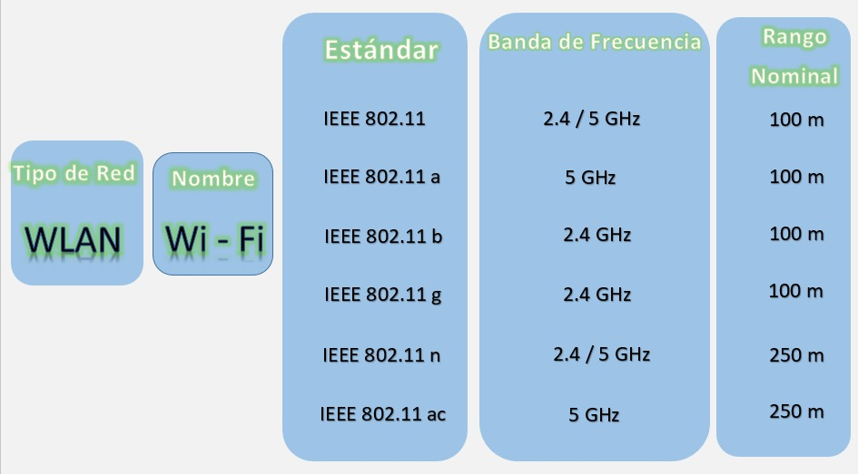
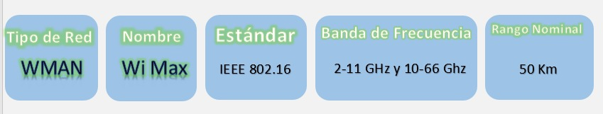

Son una herramienta muy útil, estos consideran
párametros como el perfil del terreno, que puede variar
en diferentes caracteristicas ej: montañoso o inclinado.
Ademas como la presencia de edificios, arboles, entre
otros.
Son sistemas de radiocuminaciones troncalizados que utilizan tecnicas de transmisiones multiples,
control y señalizacion digital para ofrecer la maxima eficiecia en el uso de canales de voz, datos
e imagenes.
Representan la solucion idela para sistemas de comunicaciones en el area geografica restringidas o
extensas historas como edificios, regiones, municipios y provincias.
Estos se basan en numerosas medidas y observaciones de campo
sobre el ambiente de propagacion en condiciones reales, a partir
de las cuales se obtienen formulas por medio de ajustes.
Estas se basan en teorias fisicas y mecanismos de propagación de
las ondas electromagneticas. Incorporan algunas caracteristicas
del entorno (por lo que requieren ciertos datos de morfologia
del terreno) y se complementan con medidas para el ajuste de sus
parámetros.
Estos se basan en numerosas medidas y observaciones de campo
sobre el ambiente de propagacion en condiciones reales, a partir
de las cuales se obtienen formulas por medio de ajustes.
Estos se basan en teorias fisicas y mecanismos de propagacion de las ondas electromagneticas. Incorporan
algunas caracteristicas del entorno (por lo que requieren datos de morfologia del terreno) y se
complementan con medidas para el ajuste de sus parametros.
Estos se basan en la representacion matematica de las leyes de propagacion de ondas electromagneticas,
normalmente toman como referencia las leyes de Maxwell con el fin de predecir intensidad de la señal
recibida.
Es la representacion del comportamiento de las variables aleatorias en los que existe una secuencia
cambiante de eventos que se analizan probabilisticamente durante un intervalo de tiempo.
La propagacion en interiores no esta influenciada por el perfil del terreno como la propagacion en
ambientes abiertos, pero puede ser afectada por laestructura del edificio, especialmente si hay varios
tipos de materiales de construccion en el edificio. La señal transmitida alcanza al receptor por mas de
un atrayectoria o ruta, a traves de reflexion, refreccion y difraccion de las ondas de radio a causa de
objetos como: paredes, ventanas y puertas dentro del edificio.
Los modelos en exteriores de acuerdo al tamaño de la zona de cobertura se pueden fividir en modelos de
propagacion e zonas grandes y zonas pequeñas.
Existen mas modelos de propagacion para sistemas inalambricos Outdoor debido a que la comunicacion
inalambrica en exteriores se vienen utilizando desde hace mucho mas tiempo: radio, television entre
otros.
Una caracteristica es que estos modelos no tienen en cuenta las cualidades particulares de la
propagacion en Indoor (interiores).
El siguiente video brinda el concepto y formulas del modelo de dos rayos con Linea de vista (LOS):
El siguiente video brinda el concepto y formulas del modelo de Friis con Linea de vista (LOS):
El siguiente video brinda el concepto y formulas del modelo de Walfisch Ikegami con Linea de vista (LOS)
y son linea de Vista (NLOS):
Cuando hablamos de PMR (Radios Móviles Privadas), nos referimos
a redes de comunicaciones privadas que usan los móviles que
llevan esta tecnología y no se conectan con redes públicas. Son
redes para grupos cerrados de usuarios. Su uso primordial es
aquellas organizaciones que necesitan tener un control sobre
terminales desde un punto central.
Historia
Aplicaciones o usos:
Cuando hablamos de WIFI, nos referimos a una de las tecnologias
de comunicación inalámbricas mediante ondas. La cual es muy
utilizada hoy en dia. WIFI pertenece al tipo de red WLAN (Redes
inalambrias de area local).

Historia
Ventajas
Cuando hablamos de WiMax (WorldWide InterOperability for
Microwave Acces), nos referimos a una tecnologia de radio de
ultima generación promovida por la IEEE y pincipalmentew
diseñada para proveer vía radio alta capacidad. WiMax pertence
al tipo de red WMAN(redes inalambricas de area metropolitana).

Historia:
Ventajas:
Cuando hablamos de LDMS (Los sistemas de distribución local
multipunto). Nos referimos a una la representación de una
tecnología de acceso inalámbrico de banda ancha. Se aplica para
el acceso a internet a alta velocidad, telefonía, transmisión de
datos entre otros. Requiere de una línea de vista entre el
transmisor y el receptor
Aplicaciones o Usos:
Es un estándar definido por el Instituto Europeo de Estándares
de Telecomunicaciones (ETSI). Define un sistema móvil digital de
radio y nace con el objeto de unificar diversas alternativas de
interfaces de radio digitales para la comunicación entre los
profesionales de los servicios de emergencias y servicio
público. TETRA, es un sistema móvil radioeléctrico de calidad
elevada que ha sido desarrollado principalmente para usuarios
profesionales, tales como los servicios de emergencia y los
transportes públicos. Cumple especificaciones radioeléctricas de
servicios móviles que proporcionan una capacidad completa, que
abarca las comunicaciones con concentración de enlaces,
comunicaciones sin concentración de enlaces y comunicaciones
directas de móvil a móvil.
Se emplean en muchas industrias, entre ellas las siguientes:
DECT (Digital Enbaced Cordless Telecomunications), es un sistema de radio que se utiliza con especial
frecuencia en los telefonos fijos. El nombre de este sistema se refiere a un estandar para la
comunicacion inalambrica de señales de voz y datos. Con la introduccion de estos sistemas se adquiere
gran ventaja.
El siguiente video brinda informacion del funcionamiento del sistema DECT:
Aplicaciones o usos:
La radio mensajeria es un servicio de telecomunicaciones, que permite recibir mensajes orales o escritos
en pequeños terminales portatiles de recepcion de radio (generalmente llamados mensafonos), que son
suministrados a los abonados.
Los emisores deben comunicar telefonicamente el mensaje indicando el codigo de identificacion de abonado
al que va destinado, a un centro de recogida de mensajes, donde se realiza la difusion via radio de los
mismos.
La evolucion de la radio mensajeria en el siguiente video:
La radio mensajeria es un servicio de telecomunicaciones, que permite recibir mensajes orales o escritos
en pequeños terminales portatiles de recepcion de radio (generalmente llamados mensafonos), que son
suministrados a los abonados.